跨境企業家 · 天使投資人 · 商業戰略學者 · 作者《儒道-超越孫子兵法-平衡利潤與長久夥伴關係的儒家競合之道》
Serial entrepreneur, super angel investor, business strategist, and co-founder of the Hong Kong Blockchain Association (HKBA). Author of RuDao: Beyond The Art of War — The Confucian Co-opetition Path to Balanced Profit and Enduring Partnerships.
Serial Entrepreneur, SuperAngel Investor, Author, and Internet Workflow Pioneer
Prof. Tony Tong (唐儀) is a serial technology entrepreneur, veteran SuperAngel investor (SuperAngel.cc), author, and pioneer in workflow software architectures. He is the inventor of a patented Internet Workflow System (US Patent 6012066) and Co-Founder & Co-Chairman of the Hong Kong Blockchain Association (HKBA.net / HKBA.club). His venture portfolio and strategic initiatives include DenaTrust.net, 2000x.net, Com2000.org, and RuDao.org.
During the first wave of the commercial Internet, Prof. Tong co-founded PacificNet Inc. (NASDAQ: PACT), leading it to a successful listing on the NASDAQ main board in 2000 as one of Hong Kong's pioneer public Internet companies. Over his four-decade career in technology and finance, he has served as a systems engineer, tech project director, and strategic executive advisor for multiple NASDAQ-listed technology corporations.
Prof. Tong is the author of RuDao: Beyond the Art of War — The Confucian Co-opetition Way to Balanced Profit and Enduring Partnerships (RuDao.org), a foundational management framework bridging classical Eastern philosophy with modern digital civilization, Web3 trust architectures, and AI-driven economies.
As a recognized authority across FinTech, AI, Blockchain, Web3, and Venture Capital, Prof. Tong is a frequent keynote speaker at premier investment banking conferences and global technology summits:
唐儀教授 (Prof. Tony Tong) 為資深科技企業家、超級天使投資人 (SuperAngel.cc)、《儒道》(RuDao.org) 作者及互聯網工作流系統發明人 (美國專利 US Patent 6012066)。唐教授為 香港智鏈學會AABA-香港區塊鏈協會 (HKBA.net / HKBA.club) 聯合創辦人兼共同主席，旗下創投及戰略項目包括 DenaTrust.net、2000x.net、Com2000.org 及 RuDao.org。
在第一代互聯網浪潮下，唐教授聯合創立太平洋商業網絡 PacificNet (NASDAQ: PACT)，於 2000 年在美國納斯達克主板掛牌上市，成為香港首批上市的互聯網企業之一。他曾任多家美國納斯達克上市公司工程師、項目主管及管理顧問，並受聘為美國明尼蘇達大學 (UMN.edu)、國際科技大學 (ITU.edu)、香港理工大學 (PolyU.edu.hk) 及香港金融管理學院 (HKFSI.edu.hk) 特邀教授或顧問委員會成員。
唐教授著有《儒道：超越孙子兵法 — 义利统一与长久伙伴关系的儒商竞合之道》(RuDao - Beyond the Art of War: The Confucian Co-opetition Way to Balanced Profit and Enduring Partnerships)。他現任香港中文大學 (CUHK.edu.hk) 創業研究中心 (CfE) 導師，曾應邀出席 APEC 國際金融與高新科技論壇、中國風險投資論壇，並常年受邀於 UBS、Goldman Sachs、Morgan Stanley、JPMorgan、Bank of America Merrill Lynch、CLSA、Consensus、GITEX、Forbes 及 Economist 等頂尖投行與全球峰會發表主題演講。
Prof. Tony Tong is a serial tech entrepreneur, SuperAngel investor (SuperAngel.cc), author of RuDao: Beyond the Art of War (RuDao.org), and inventor of US Patent 6012066 (Internet Workflow Systems). He is Co-Founder and Co-Chairman of the Hong Kong Blockchain Association (HKBA.net) and founder of platforms including DenaTrust.net, 2000x.net, and Com2000.org.
Having co-founded PacificNet (NASDAQ: PACT) and taken it public on NASDAQ in 2000, Prof. Tong is a pioneer in Asia's tech capital movement. He serves as a CUHK Entrepreneurship Mentor (CfE) and has taught/advised at UMN, ITU, PolyU, and HKFSI. He is a prominent global keynote speaker across top-tier investment banks (Goldman Sachs, Morgan Stanley, UBS, JPMorgan) and major global AI/Web3 summits worldwide.
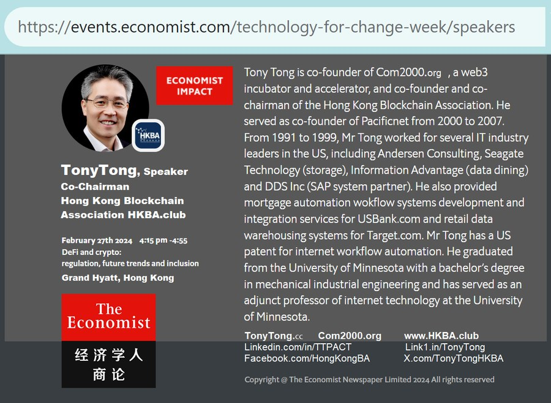
唐仪教授 Prof. TonyTong.cc — CUHK Mentor
Co-Founder and Co-Chairman of Hong Kong Blockchain Association.
TonyTong.cc is a Mentor of CUHK at The Center for Entrepreneurship (CfE) at The Chinese University of Hong Kong (CUHK.edu.hk).
HK Fintech Week: Blockchain from Bitcoin to Metaverse — Hong Kong Metropolitan University.
YouTube ↗「We Are Web3 Builders — Com2000.com」AI generated song by TonyTong.cc (Suno.com)。
Suno.com ↗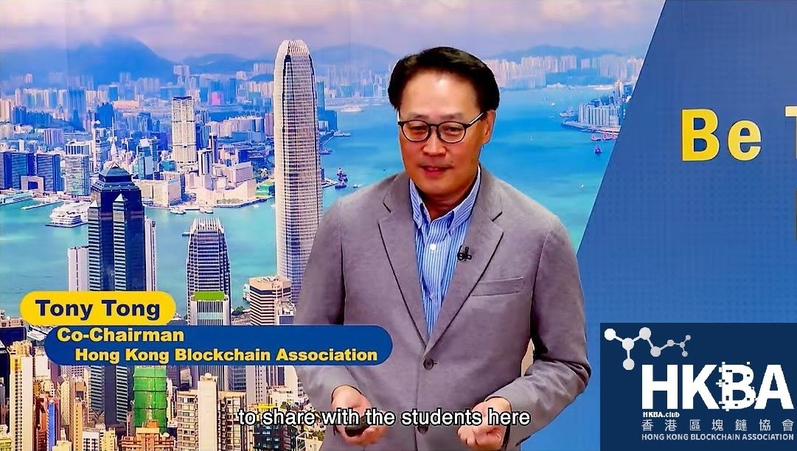
唐仪教授 香港都會大學 教学演讲视频 Hong Kong Metropolitan University HKMU.edu.hk
Prof. TonyTong.cc teaching at HKMU.edu.hk Teaching Video
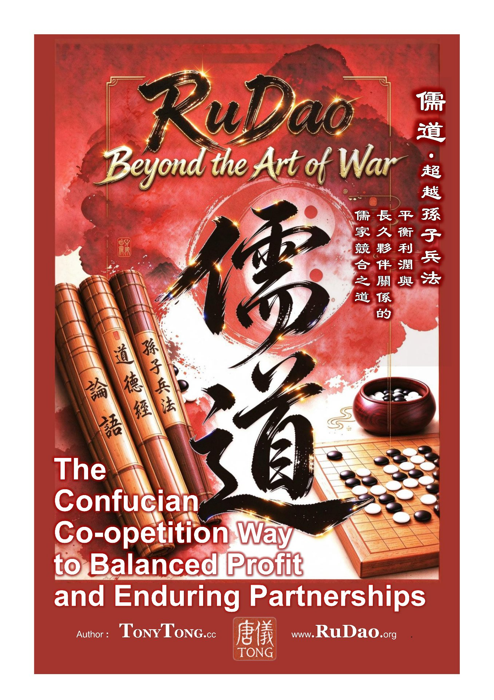
The Confucian Co-opetition Way to Balanced Profit and Enduring Partnerships
儒道 超越孙子兵法 — 平衡利润与长久伙伴关系的儒家竞合之道
Author 作者：唐儀 TonyTong.cc · www.RuDao.org
中英雙語版，全書三部分十六章 — 內修儒商之德以治企，外行儒將之道以競合：利润与伙伴关系可以兼得。Bilingual edition in three parts and sixteen chapters.
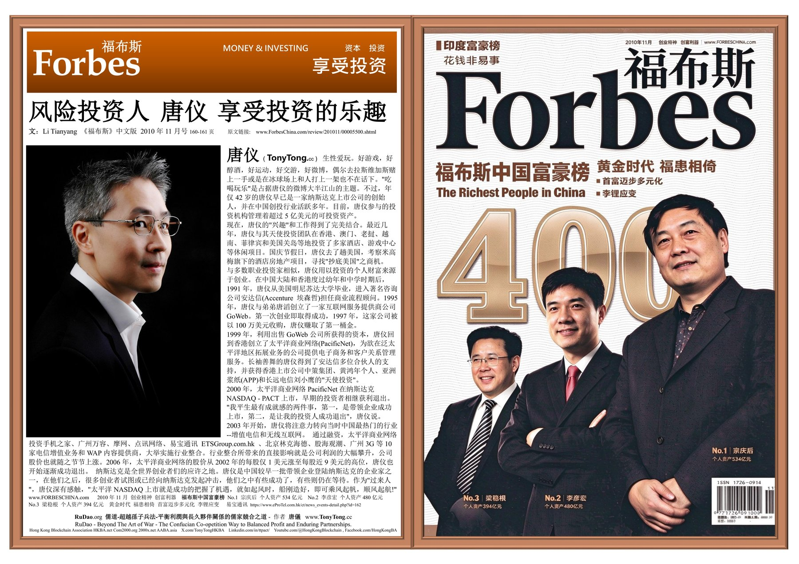
Forbes China 福布斯中文版 2010年11月号 · MONEY & INVESTING 资本·投资 · pp.160–161 — 封面人物专访 Feature
文 Story: Li Tianyang 李天阳 · 《福布斯》中文版 Forbes China
原文 Original: forbeschina.com/review/201011/00005500.shtml（原刊链接已失效 Link no longer active）
风险投资人唐仪 ( TonyTong.cc ) 享受投资的乐趣。从 GoWeb 创业第一桶金，到 PacificNet（NASDAQ: PACT）登陆纳斯达克，再到天使投资与 2000x.net 孵化基地，唐仪参与的投资机构管理着超过5亿美元的可投资资产。
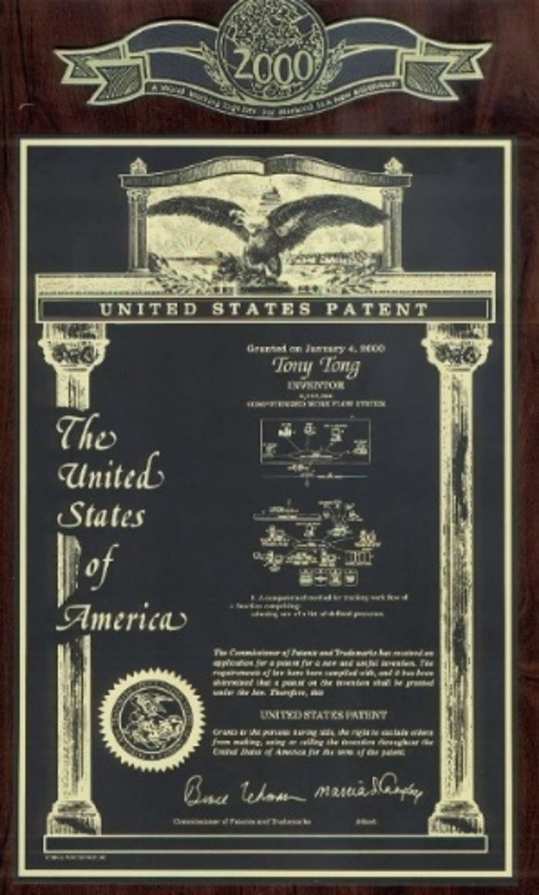
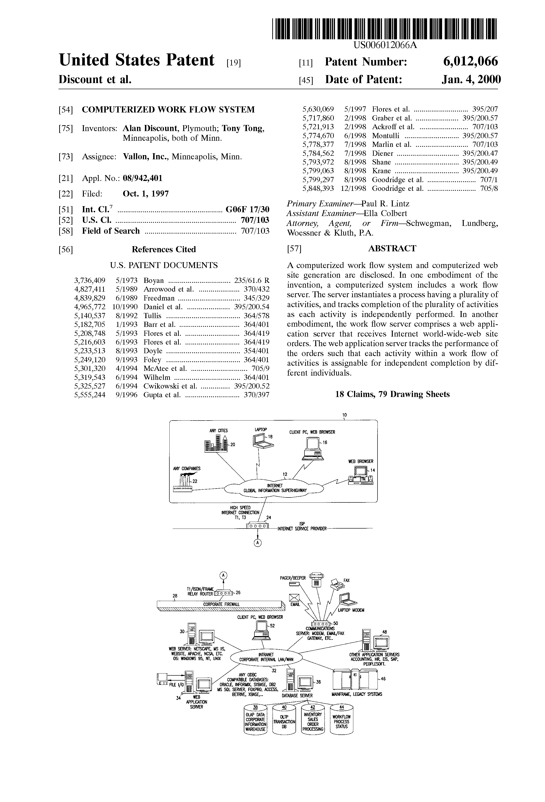
Computerized Work Flow System — Granted 授權 January 4, 2000 · Inventors 發明人: Tony Tong, Alan Discount · Assignee 受讓人: Vallon, Inc., Minneapolis, Minn.
Inventor 發明人: 唐儀 TonyTong.cc · patents.google.com/patent/US6012066 ↗
US Patent 6,012,066 — Computerized Work Flow System：互聯網工作流自動化系統發明專利，2000年1月4日由美國專利商標局 USPTO 授權，共 18 項權利要求、79 幅附圖。專利描述一種電腦化工作流系統與電腦化網站生成發明：工作流服務器實例化含多項活動的流程並跟蹤各項活動的完成進度，每項活動可由不同個人獨立完成；Web 應用服務器接收互聯網全球廣泛網站訂單並跟蹤工作流中每項活動的績效。
US Patent 6,012,066 "Computerized Work Flow System" was granted to inventor Tony Tong on January 4, 2000 — a pioneering invention in Internet workflow automation. The work flow server instantiates a process having a plurality of activities and tracks completion of each activity as it is independently performed by different individuals; the web application server receives Internet world-wide-web site orders and tracks the performance of the activities within the work flow.
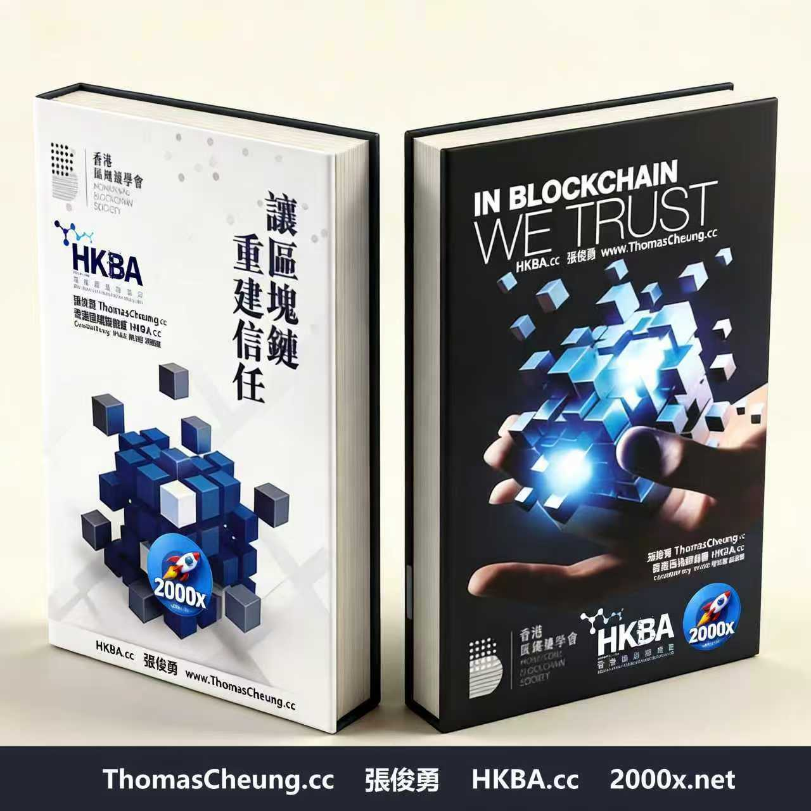
Author 作者: Thomas Cheung 張俊勇
Publisher / Sponsor 出版/贊助: HKBA 香港區塊鏈學會
Website 網站: ThomasCheung.cc · HKBA.cc · 2000x.net
本書由香港區塊鏈學會(HKBA)張俊勇(Thomas Cheung)撰寫,核心主題圍繞區塊鏈即信任機器展開。書中剖析傳統商業依賴中心化中介建立信任的固有痛點,講解區塊鏈如何透過共識機制、不可竄改賬本、密碼學,建立一套「去中介化」的新型信任架構。
書中結合香港Web3、數字資產、金融監管、商業落地場景,拆解區塊鏈信任的底層邏輯;同時探討技術信任與人文信任的邊界——區塊鏈可以保障數據可信,但長遠商業合作,依然離不開人的價值觀、誠信與共識。
Authored by Thomas Cheung, published under the Hong Kong Blockchain Association (HKBA), In Blockchain We Trust frames blockchain fundamentally as a trust machine. The book examines the long-standing weaknesses of trust built on centralized intermediaries in traditional commerce. It explains how blockchain creates a new trust infrastructure via cryptographic proof, immutable ledgers and distributed consensus, removing the need for single trusted middlemen.
Drawing from Hong Kong's Web3 ecosystem, digital-asset regulation and real business use cases, it unpacks the mechanics of technical trust. It also delivers a balanced view: blockchain secures data integrity, yet sustainable partnerships still rely on human integrity, shared values and moral consensus.
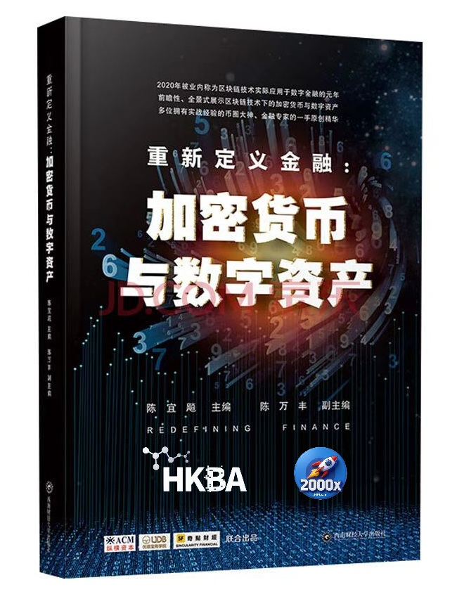
Editor-in-Chief 主编: Dr. Yibiao Chen 陈宜飚博士
Associate Editor 副主编: Chen Wanfeng 陈万丰
Publisher 出版社: Southwestern University of Finance and Economics Press 西南财经大学出版社
Co-Producers 联合出品: HKBA 香港区块链协会, ACM, UDB, Zunjia Financial 尊嘉金融
本书以2020年作为区块链落地数字金融的元年为起点,集合一线币圈从业者、金融专家的实战一手经验,兼顾理论框架与行业实操。全书围绕区块链、加密货币、数字资产展开,一方面讲解数字资产的投资分析逻辑、合规资产管理路径、业务风险防控方法;另一方面探讨区块链技术对传统金融体系的冲击、落地瓶颈,以及去中心化金融(DeFi)的演化方向。
Taking 2020, the industry-recognized first year of blockchain's practical adoption in digital finance, as its starting point, this book gathers first-hand practical insights from seasoned crypto practitioners and finance specialists. It balances theoretical frameworks with real-world industry operations. Focusing on blockchain, cryptocurrency and digital assets, it covers the methodology of digital asset analysis, compliant asset management, and risk control for related businesses.
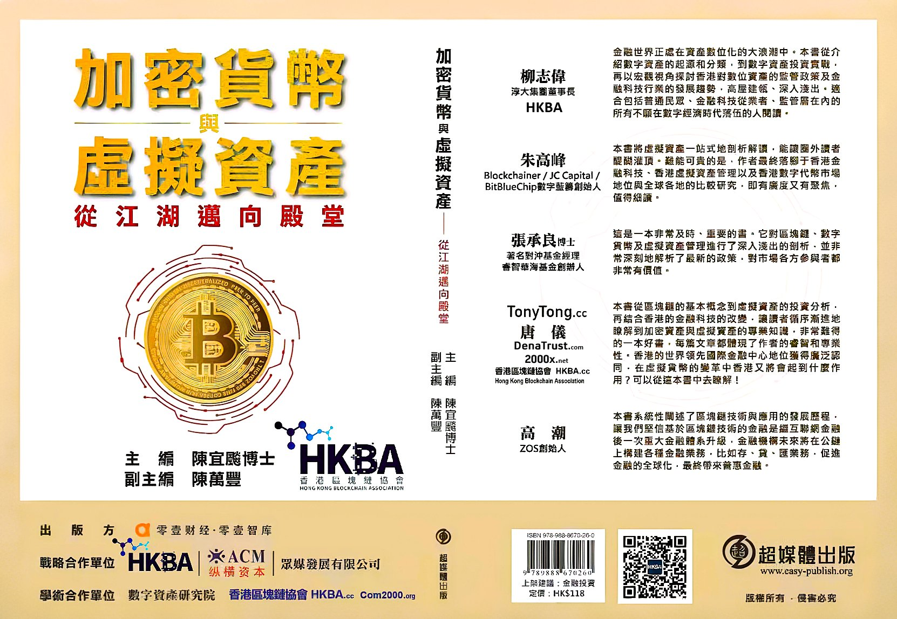
Author 作者：Dr. Yibiao Chen 陳宜飈博士 · HKBA.net
Sponsored by 出版贊助：Hong Kong Blockchain Association 香港區塊鏈協會 HKBA.net
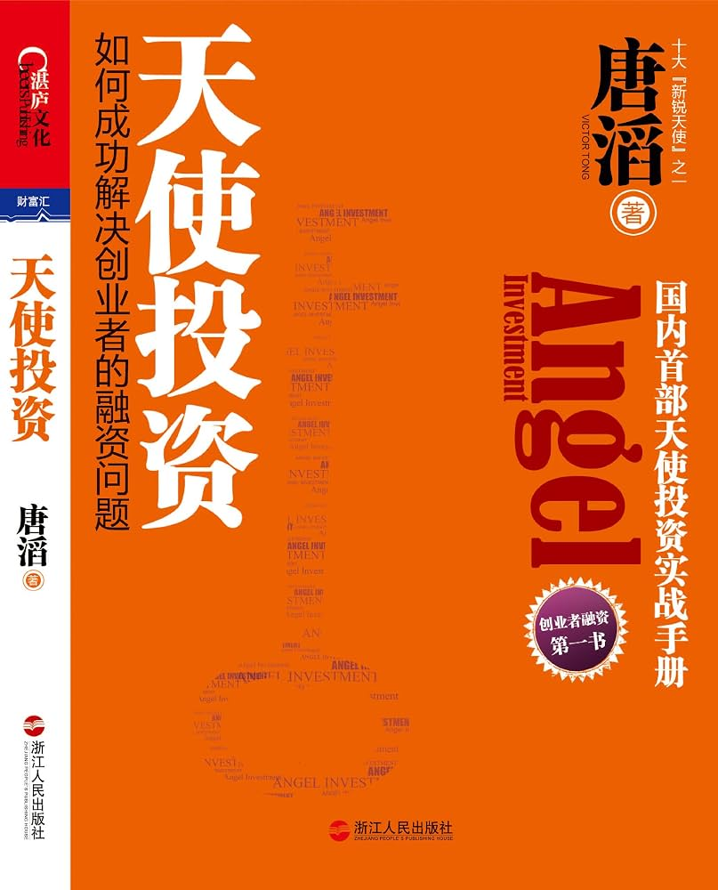
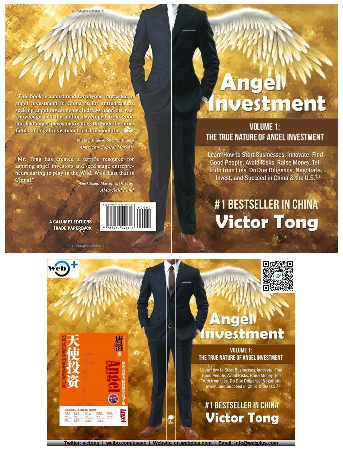
国内首部天使投资实战手册 — 打造创业者与天使投资人沟通的最佳桥梁
Author 作者：唐滔 Victor Tong
Publisher 出版社：Amazon Kindle Edition · 湛庐文化•财富汇
编辑推荐：
1. 国内首部天使投资的实战手册，堪称创业者的第一本书，打造创业者与天使投资人沟通的最佳桥梁。
2. 薛蛮子、徐小平、雷军、周鸿祎、孙陶然、但斌、曾玉、查立、杨宁、户才和、周哲、莫天全、《创业家》、《创业邦》等联袂推荐。
3. 作者唐滔结合他在美国和中国17年的创业和投资经历，为创业者和投资者提供了珍贵和可靠的第一手资料。
4. 创业者应何时融资？花多少时间去融资？如何获得融资者青睐？涵盖创业、成长、融资、退出、上市的全过程。
5. 书中首次提出了天使投资的三大本色：创新、识人、避险，深度剖析了国内外创业者与投资者的各种谎言与陷阱。
内容简介：国内首部天使投资的实战手册，是创业者的第一手册，首部针对创业中投融资问题的实用指南，沟通创业者与天使投资人的最佳桥梁。从天使投资人和创业者双方的角度，探讨适合中国天使投资者和创业者的发展模式及实战策略。书中首次提出了天使投资的三大本色：创新、识人、避险，深度剖析了国内外创业者与投资者的各种谎言与陷阱，涵盖创业、成长、融资、退出、上市的全过程。
作者简介：唐滔（Victor Tong）@天使投资唐 — 网佳创投创始及执行合伙人，出身天使投资世家，拥有17年海内外天使投资的丰富经验，被《创业家》杂志评为十大「新锐天使」之一。以优异成绩毕业于美国明尼苏达大学，获物理学学士学位，并在毕业典礼上代表全校毕业生演讲。1994年在明尼苏达州创办网佳前身（TIM），太平洋网 Pacificnet 于 2000 年成功登录纳斯达克，2002–2008 年任 Pacificnet 上市公司总裁兼 CEO。1999 年获明尼苏达州「City Business 40 Under 40」最年轻得奖者殊荣；2008 年被「全球博彩杂志」评为最受关注的25位业界精英之一。曾就职于全球顶级管理咨询公司埃森哲和全球知名企业 3M 公司。
各方赞誉：
「天使投资作为一种投资形式，相对于风险投资和私募股权投资而言，大家还比较陌生。唐滔先生的这本书及时详细地介绍了天使投资的发展历程，他结合了自己的亲身经历，又引用了大量生动的案例，使读者能够一目了然。今年将是中国天使投资元年，这本书应是献给天使投资年的一份厚礼。」— 薛蛮子，天使投资第一人
「如果你想赚快钱，千万不要做天使投资；如果你想跟中国最优秀的年轻人一起做最狂野的梦，就一定不要错过天使投资！唐滔先生的作品，肯定是国内最早有关天使投资的专著之一，期待『天使投资唐』的新书，能够吸引更多人加入天使投资的行列，帮助更多中国创业者实现梦想。」— 徐小平，真格基金创始人 · 新东方共同创始人 · 著名天使投资人
Book Web Links：

- A Song Soaring from HaiWuTian - Guilin : Tong Cho Sam's Legend of Entrepreneurship
Sub-title: Memoir & literary work authored by Tong Cho Sam, copyright asset held by Tong Cho Sam Family Foundation
副题：唐楚三撰写的文学回忆录，著作版权归属于唐楚三家族基金会
唐楚三家族基金会 章程
Tong Cho Sam Family Foundation - Family Constitution
Authors 作者：Tong Cho Sam 唐楚三 · Qin Zhong 秦忠 & Chen Yanru 陈妍如
Publisher 出版社：广西民族出版社 Guangxi Ethnic Publishing House · 1995
简介 · ABOUT THE BOOK
《从海武田飞出的歌》是记述香港实业家唐楚三的传记文学作品，由秦忠、陈妍如合著，1995 年由广西民族出版社出版。
青年作者秦忠和陈妍如撰写的传记文学《从海武田飞出的歌》(广西民族出版社 1995 年版)记叙了香港企业家唐楚三先生曲折坎坷的人生旅程及其与命运抗争的不屈精神，最终创造了辉煌的业绩，不断攀登事业的巅峰的感人故事。唐楚三的母亲是桂林大利实业公司的董事长。
"A Song Soaring from HaiWuTian - Guilin" is a biographical account documenting the life of Tong Cho Sam (唐楚三 Tang ChuSan), a Hong Kong industrialist. Co-authored by Qin Zhong and Chen Yanru, it was published by Guangxi Ethnic Publishing House in 1995.